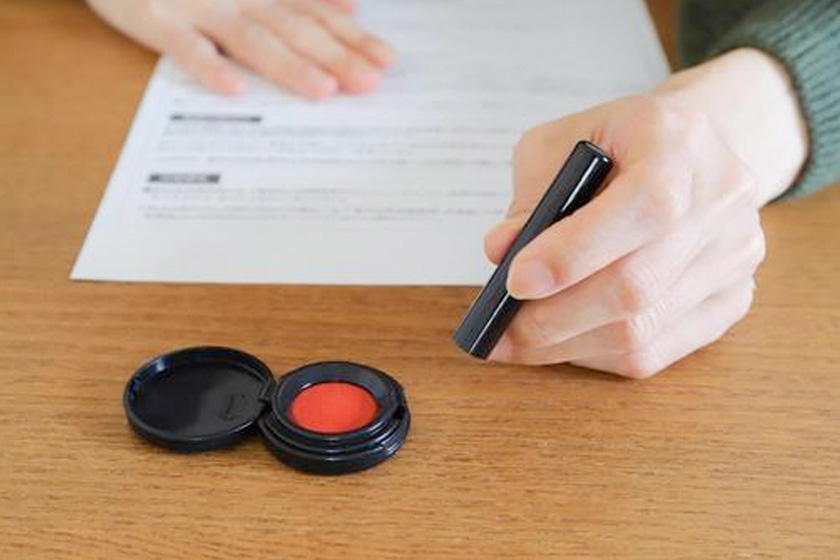

FOR YOU
高崎市で塗り替えを
ご検討中の方へ
誰が塗るのか、何を大事にしているのか、どんな流れで進むのか。頼む前に知っておきたいことを、このページにまとめました。

代表・1級建築塗装技能士星野 竜一
MESSAGE
代表の星野が、自ら現場に立ちます。
こんにちは、星野美装の星野です。30歳で独立して、今年で21年目になります。
うちは、頼まれた家を下請けに出しません。見積りにうかがった私が、そのまま足場に上がって塗ります。お話ししたことがそのまま仕上がりに届くので、「言ったのに伝わっていなかった」ということがありません。
塗装でいちばん大事なのは、塗る前の下地処理です。塗り終わった直後はどこも同じように見えますが、数年たつと差がはっきり出てきます。だから、誰の目にも残らないこの工程に、いちばん時間をかけています。そして、下塗り・中塗り・上塗りの3回塗りを必ず守ります。
「まだ塗り替えるか決めていない」という段階でもかまいません。まずはお家の状態を見せてください。
株式会社 星野美装 代表 星野 竜一
PROMISE
星野美装の4つの約束


FLOW
お問い合わせから完成まで、工事の流れ12工程
ご相談〜ご契約
- 1お問い合わせお電話・フォームで。写真があれば添えてください。
- 2現地調査（無料）外壁・屋根の状態を確かめ、面積を測ります。
- 3お見積り・ご提案塗料のグレード別にご説明します。
- 4ご契約・色決め納得いただいてからのご契約です。
工事の準備
- 5近隣あいさつ工事の前に、ご近所へごあいさつにうかがいます。
- 6足場の組み立て安全に塗るための足場とネットを組みます。
- 7高圧洗浄汚れやコケを洗い流します。
- 8下地処理・養生ひびやすき間を整え、塗らない部分を守ります。
塗装〜完成
- 9下塗り壁と塗料をくっつける土台の塗装。
- 10中塗り色と厚みをつくる塗装。
- 11上塗り・付帯部塗装仕上げの塗装と、雨どいなどの細かな部分。
- 12完成確認・足場解体一緒に仕上がりを確かめてから、足場を外します。



FAQ
よくある質問
お見積り・ご依頼について
Q見積りは無料ですか？
はい。現地調査とお見積りは無料です。
Q見積りのあとに断ってもいいですか？
もちろんです。お断りいただいても費用はかかりません。
Q工事は下請けの業者さんが来るのですか？
いいえ。下請けに出さず、代表の星野が自ら現場に立って塗ります。
Q対応エリアはどこですか？
群馬県高崎市を中心に対応しています。近隣の市町村の方もご相談ください。
塗装・塗料について
Q塗り替えの時期の目安は？
外壁塗装の寿命の目安は10〜15年です。色あせやひび割れがあれば、早めの点検をおすすめします。
Q塗料にはどんな種類がありますか？
ウレタン・シリコン・フッ素・無機の4種からお選びいただけます。塗料の違いを見る
Q3回塗りとは何ですか？
下塗り・中塗り・上塗りの3回に分けて塗ることです。中塗りで止めると、2〜3年たってから色落ちなどに大きな差が出てきます。
Q下地処理とは何ですか？
塗る前に汚れを落とし、ひびやすき間を整える工程です。塗装でいちばん大事な工程で、この差が数年後に目に見えてきます。
料金・工事について
Q足場代は別にかかりますか？
料金の目安は足場込みでお出ししています。料金に含まれるもの
Qご近所へのあいさつはしてもらえますか？
はい。工事の前にご近所へのごあいさつにうかがいます。
Qアパートや工場の塗装もお願いできますか？
はい。アパートや工場の機械塗装も手がけています。
Q雨漏りだけの相談でもいいですか？
はい。雨漏り調査・建物劣化調査で原因を探ります。雨漏り調査を見る
ここにないご質問も、お気軽にどうぞ。お問い合わせフォーム →